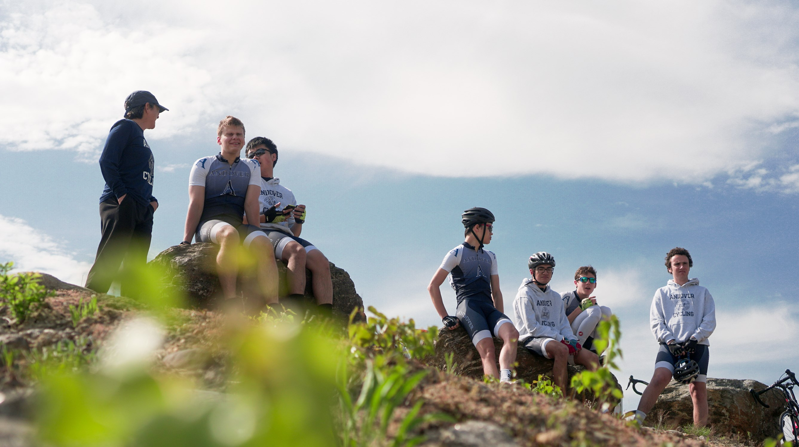
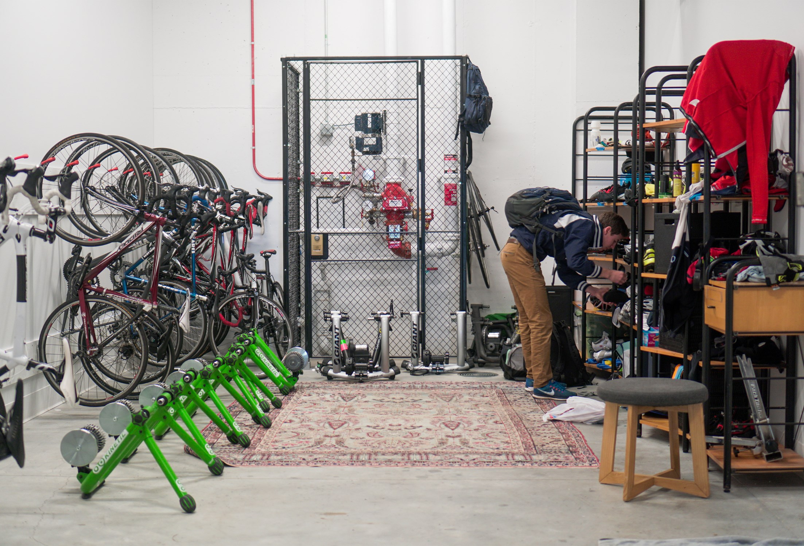
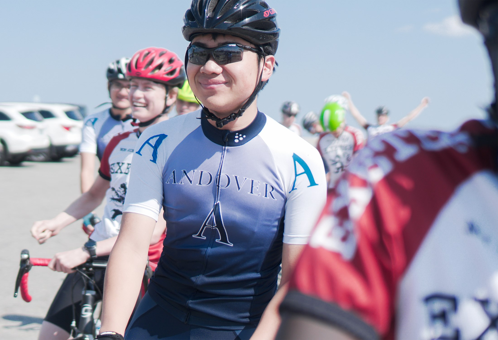
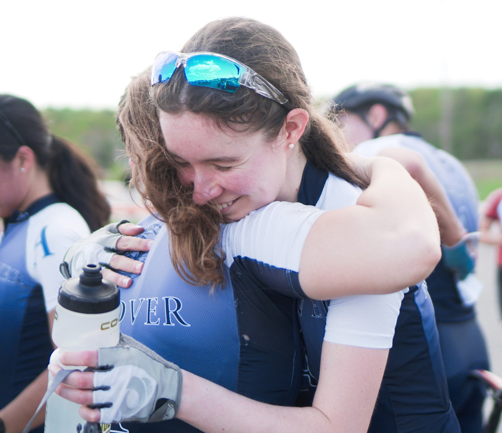
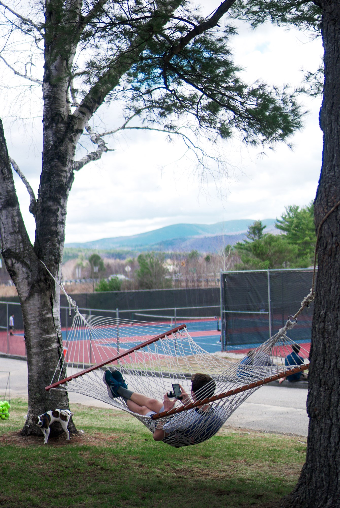
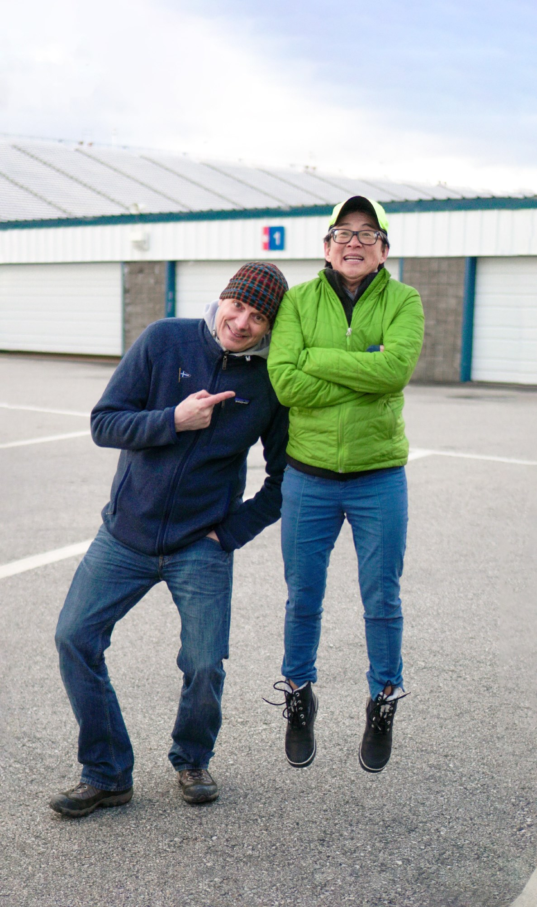
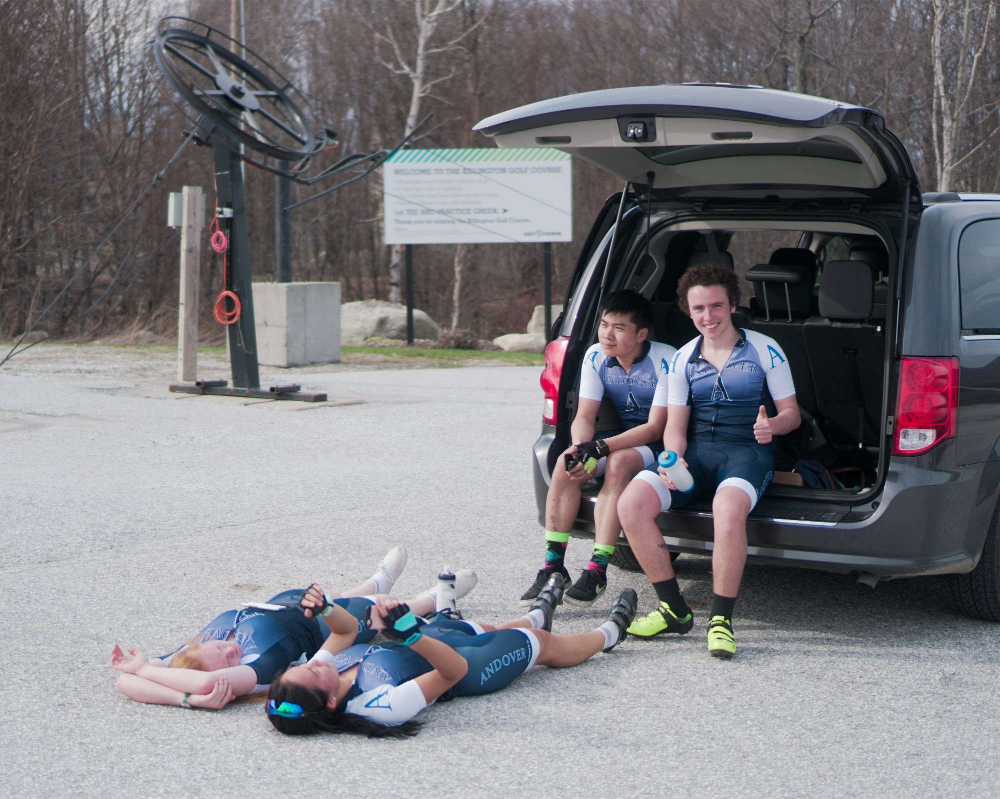
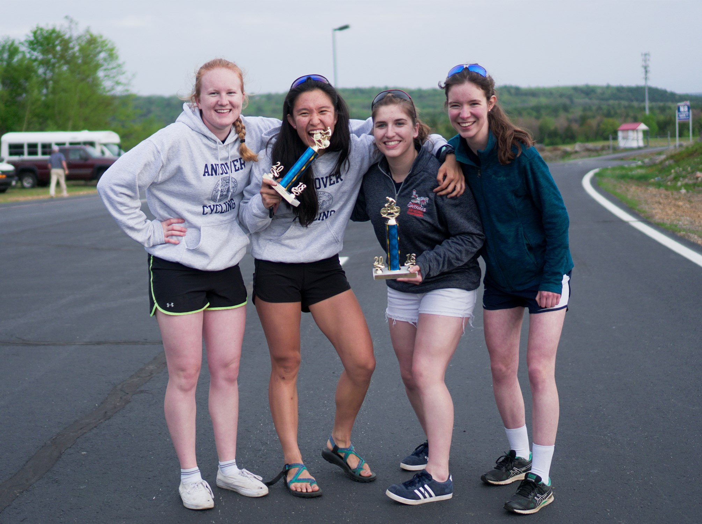
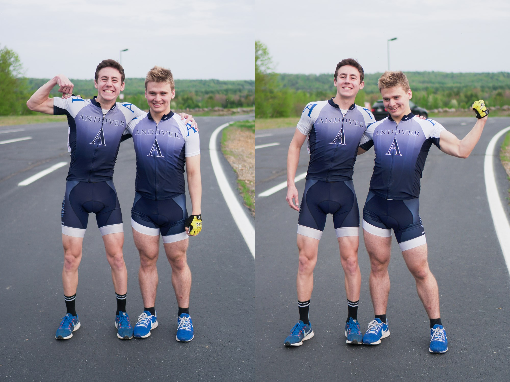

Although Andover's cycling team has had a long history, it's not the most well known among even the students of the school, being run out of a faculty member's garage. With the newly built Snyder athletic center, the team was finally able to get its own room and gain some visibility; on top of this, two of our team members were photographers, one of whom were me. The other photographer was Jacob Buehler, who with his massive telephoto lens and sports experience, focused on the action (and took the picture that's the thumbnail of this case study on the homepage); I instead focused on pictures of the team when they weren't racing.
        